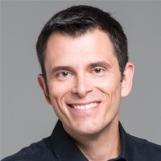

Sobre mim
Olá, tudo bem?
Me chamo Rafael, tenho 38 anos e sou de Guarulhos/SP.
Sou estudante do Bootcamp Java Full Stack e Cloud na SoulCode, em parceria com a Porto.
Sou apaixonado por tecnologia!
Será um prazer podermos conversar! Caso queira, entre em contato através do Linkedin ou envie um e-mail. Fico no aguardo.
Minha Jornada
Meu primeiro contato com programação foi em 2003, durante a disciplina de lógica do curso Técnico em Eletroeletrônica no Senai-SP, onde programei em assembly para o microcontrolador 8051. Foi aí que descobri minha paixão!
Em 2009, dei continuidade à minha trajetória ao iniciar o curso de Análise e Desenvolvimento de Sistemas na Fatec-SP, e a paixão pela programação só cresceu!
A minha primeira oportunidade de trabalhar com TI foi na área de vendas, onde permaneci por 9 anos, atuando em grandes empresas. No entanto, em 2022, tomei a decisão de fazer uma mudança de carreira para seguir minha verdadeira paixão: a programação. Atualmente, estou me preparando para realizar esse sonho quando a oportunidade se apresentar.
Quem eu sigo
-

Bill Gates
Co-chair, Bill & Melinda Gates Foundation
-
Filipe Deschamps
Programador e YouTuber
-
Gustavo Guanabara
Professor e YouTuber
-
Fabio Akita
Co-Founder of Codeminer 42, YouTuber at @Akitando
-

Gustavo Cerbasi
Especialista em Inteligência Financeira
-
Pedro Calabrez
Professor e escritor. Doutor em Ciências (Ph.D) pelo Lab de Neurociências Clínicas da Unifesp. Diretor da NeuroVox.